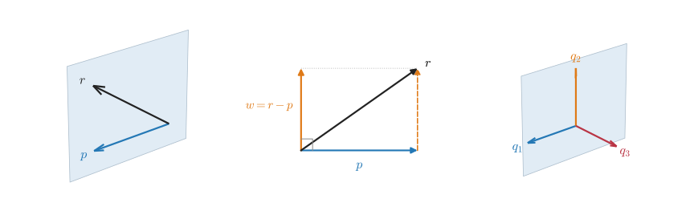
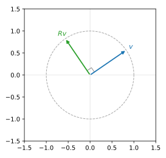

Created创建 Updated最后更新
Matrix Decompositions · 02
From Orthogonal Directions to Matrix Structure
1. An Orthonormal Real Eigenbasis
1.1 Finding Orthonormal Eigenvectors
The eigendecomposition A=X\Lambda X^{-1} of Part 1 requires only that the eigendirections be linearly independent; they may be oblique. For which matrices can the eigenvectors be chosen mutually perpendicular? Start with a real symmetric matrix, one satisfying S^{\mathsf T}=S:
Its characteristic polynomial is
with two roots \lambda_1=1 and \lambda_2=3. Substituting \lambda_1=1 into (S-\lambda I)v=0 gives
and both rows give v_1+v_2=0; take x_1=(1,-1)^{\mathsf T}. Substituting \lambda_2=3,
and both rows give -v_1+v_2=0; take x_2=(1,1)^{\mathsf T}. Their inner product is
so the two directions are perpendicular. Both have length \sqrt{1^2+(\pm1)^2}=\sqrt2; dividing each by its length gives the unit eigenvectors
A set of vectors such as q_1,q_2, whose pairwise inner products are zero and whose lengths are one, is called orthonormal.
1.2 Finding Expansion Coefficients by Projection
An orthonormal basis turns finding coordinates into taking inner products. Write v in this eigenbasis as
and multiply both sides on the left by q_1^{\mathsf T}. Since q_1^{\mathsf T}q_1=1 and q_1^{\mathsf T}q_2=0,
Likewise c_2=q_2^{\mathsf T}v. The coefficient c_i=q_i^{\mathsf T}v is the signed scalar projection of v onto the direction q_i: it is a number that may be positive or negative, whereas the vector component actually lying along that direction is c_iq_i. Take v=(2,0)^{\mathsf T} and work through the whole computation:
Then
This agrees with the direct computation S(2,0)^{\mathsf T}=(4,2)^{\mathsf T}. The relation between the vector components c_1q_1, c_2q_2 and v is shown in Fig. 1.

1.3 Writing the Projections as a Matrix
Arrange q_1,q_2 as columns, Q=\begin{bmatrix}q_1&q_2\end{bmatrix}. The (i,j) entry of the product Q^{\mathsf T}Q is exactly q_i^{\mathsf T}q_j:
The diagonal entries say the lengths are one, and the off-diagonal entries say the columns are pairwise orthogonal. If Qc=0, multiplying on the left by Q^{\mathsf T} gives c=0, so the columns of Q are linearly independent and the square matrix Q is invertible. Multiplying Q^{\mathsf T}Q=I on the right by Q^{-1} gives Q^{\mathsf T}=Q^{-1}: the transpose of an orthogonal matrix is its inverse. A real square matrix with orthonormal columns is called an orthogonal matrix.
Finding coordinates therefore does not require solving a linear system. We have c=Q^{\mathsf T}v, and Sq_1=q_1, Sq_2=3q_2 combine column by column into SQ=Q\Lambda (with \Lambda=\operatorname{diag}(1,3)); multiplying on the right by Q^{\mathsf T} gives
The change of basis is simple precisely because the columns are orthonormal, so the inverse can be read off from the transpose.
2. From Real Vectors to Complex Vectors
2.1 Eigenvalues and Eigendecomposition over the Complex Numbers
The eigenvalues of a real matrix need not be real. Consider
The equation \lambda^2+1=0 has no real root. Once complex numbers are allowed, i^2=-1 gives two roots, \lambda=i and \lambda=-i. Substitute each into the eigenvalue equation:
For \lambda=i,
\begin{bmatrix}-i&-1\\1&-i\end{bmatrix}\begin{bmatrix}v_1\\v_2\end{bmatrix}=0.The first row gives v_2=-iv_1, and substituting into the second row gives v_1-i(-iv_1)=0, which is also satisfied. Taking v_1=1 gives r_+=(1,-i)^{\mathsf T}.
For \lambda=-i,
\begin{bmatrix}i&-1\\1&i\end{bmatrix}\begin{bmatrix}v_1\\v_2\end{bmatrix}=0.The first row gives v_2=iv_1, and substituting into the second row gives v_1+i(iv_1)=0. Taking v_1=1 gives r_-=(1,i)^{\mathsf T}.
Direct multiplication confirms this:
Thus a matrix with no eigenvalues over the reals may still have eigenvalues and corresponding eigenvectors once complex numbers are allowed.
This existence result extends to any finite-dimensional square matrix. The fundamental theorem of algebra guarantees that every nonconstant polynomial with complex coefficients has at least one complex root. If \lambda_1 is a root of p(\lambda), polynomial division gives
where the remaining polynomial p_{n-1} has degree one less than before. As long as its degree is still greater than zero, the theorem can be applied again to factor further. For an n\times n square matrix A (n\ge1), the highest-degree term of \det(A-\lambda I) is (-1)^n\lambda^n, so in the end
There are n linear factors here, but the roots may repeat. This is what "n roots counted with multiplicity" means; it does not require n distinct eigenvalues.
Each root \lambda_j makes A-\lambda_jI non-invertible, so (A-\lambda_jI)v=0 has a nonzero solution. Therefore, any finite-dimensional square matrix, whether its entries are real or complex, has eigenvalues and corresponding nonzero eigenvectors over the complex numbers.
Complex numbers can likewise be added, subtracted, multiplied, and divided, and every nonzero complex number has a multiplicative inverse. Gaussian elimination and the tests for linear independence and invertibility still apply; eigenvectors belonging to distinct eigenvalues are linearly independent, and the proof does not rely on the ordering of the real numbers (see Part 1, Section 4.2). As long as n independent eigenvectors can be chosen, arranging them as the columns of X still gives
Then X is invertible, and multiplying on the right by X^{-1} gives A=X\Lambda X^{-1}. The two eigenvalues of R in this example are distinct, so r_+,r_- are linearly independent, and we may take
However, the existence of eigenvalues does not by itself guarantee that an eigendecomposition can be completed. Consider another real matrix
It has only one distinct eigenvalue \lambda=1, a root repeated twice. Substituting into the eigenvalue equation,
Even when v_1,v_2 are allowed to be complex, the equation still requires v_2=0. All eigenvectors can only be written as
They are all multiples of the same vector, so two linearly independent ones cannot be chosen, and J still cannot be diagonalized over the complex numbers (J is the example of Part 1, Section 4.3).
2.2 The Formulas for Length and Orthogonality Need Adjusting
When an eigenvalue is itself complex, the eigenvector is in general a complex vector too, and the picture of "stretching along an eigendirection" in the real plane cannot be carried over directly. Length and orthogonality must be redefined before we can continue to discuss orthogonal eigendirections. Take
so the "squared length" of a nonzero vector becomes zero. The reason is that the transpose only moves entries around without taking conjugates, and i^2=-1 cancels the positive term.
Taking the complex conjugate of each component and then transposing, denoted \dagger, is called the conjugate transpose:
where \bar z_k is the complex conjugate of z_k. For z=(z_1,\dots,z_n)^{\mathsf T} and w=(w_1,\dots,w_n)^{\mathsf T}, define the inner product
It conjugates only the components of the first vector, so \langle z,z\rangle=|z_1|^2+\cdots+|z_n|^2\ge0, which vanishes only when z=0; on this basis the norm is defined as \|z\|=\sqrt{\langle z,z\rangle}. Returning to the z above, \|z\|^2=|1|^2+|i|^2=2>0.
The complex inner product treats its two slots asymmetrically:
Swapping the two vectors requires a conjugate: \langle w,z\rangle=\overline{\langle z,w\rangle};
A constant in the second slot can be pulled out directly: \langle z,cw\rangle=c\langle z,w\rangle;
A constant in the first slot is conjugated before being pulled out: \langle cz,w\rangle=\bar c\langle z,w\rangle.
Two vectors with \langle z,w\rangle=0 are called orthogonal, and a vector with \|z\|=1 is called a unit vector. Check with w=(1,-i)^{\mathsf T}:
2.3 Finding Expansion Coefficients with the Complex Inner Product
Dividing z and w each by its length \sqrt2 gives an orthonormal set of complex vectors
For any vector v, write v=c_1u_1+c_2u_2 and multiply both sides on the left by u_1^\dagger:
and likewise c_2=u_2^\dagger v. Combining the two columns into U=\begin{bmatrix}u_1&u_2\end{bmatrix}, the inner-product relations together read
U^\dagger U=I likewise guarantees that the columns of U are linearly independent, so U is invertible; multiplying on the right by U^{-1} gives U^\dagger=U^{-1}. A complex square matrix whose columns are orthonormal under the complex inner product is called a unitary matrix.
3. Hermitian Matrices: Real Eigenvalues and an Orthogonal Eigenbasis
3.1 Consequences of Conjugate-Transpose Symmetry
A square matrix satisfying
is called a Hermitian matrix. Entry by entry, this condition is H_{ij}=\overline{H_{ji}}: each diagonal entry equals its own conjugate and is therefore real, and entries placed symmetrically across the main diagonal are complex conjugates of each other. If all entries are real, the condition becomes H^{\mathsf T}=H, that is, real symmetric.
This symmetry condition constrains the eigenvalues and the eigenvectors respectively.
Eigenvalues are always real. Let Hx=\lambda x with x\ne0; multiplying on the left by x^\dagger gives
\lambda=\frac{x^\dagger Hx}{x^\dagger x}.The denominator is x^\dagger x=\|x\|^2>0. Taking the conjugate of the numerator,
\overline{x^\dagger Hx}=x^\dagger H^\dagger x=x^\dagger Hx,so the numerator is also real, and \lambda must be real.
Eigenvectors belonging to distinct eigenvalues are orthogonal. Let also Hy=\mu y with \lambda\ne\mu. Since \lambda has been shown to be real,
\lambda x^\dagger y=(Hx)^\dagger y =x^\dagger H^\dagger y=x^\dagger Hy=\mu x^\dagger y.Hence (\lambda-\mu)x^\dagger y=0, which forces x^\dagger y=0.
These two short proofs show where real eigenvalues and orthogonality come from [2, §6.4].
3.2 From a Hand Calculation to the Spectral Theorem
Take a Hermitian matrix
Transposing and then conjugating gives H^\dagger=H. To find the eigenvalues:
where (i)(-i)=-i^2=1. The two roots \lambda_1=1 and \lambda_2=3 are both real. Substituting \lambda_1=1,
gives v_1=-iv_2; taking v_2=1, the eigenvector is (-i,1)^{\mathsf T}. Substituting \lambda_2=3,
gives v_1=iv_2, and the eigenvector is (i,1)^{\mathsf T}. Both vectors have squared length |-i|^2+1=2; dividing each by \sqrt2 and writing
the complex inner product is
so the directions are perpendicular. Arrange u_1,u_2 as columns, U=\dfrac1{\sqrt2}\begin{bmatrix}-i&i\\1&1\end{bmatrix}, and verify the eigendecomposition by direct multiplication. First compute
then multiply on the left by U^\dagger=\dfrac1{\sqrt2}\begin{bmatrix}i&1\\-i&1\end{bmatrix}:
This hand calculation exhibits three things at once: the eigenvalues 1,3 of the Hermitian matrix are real; the two eigenvectors can be normalized and are mutually orthogonal; and together they form a basis of the two-dimensional space, with the change-of-basis matrix U unitary (U^\dagger U=I), so the diagonalization is written H=U\Lambda U^\dagger.
For any n\times n Hermitian matrix, the spectral theorem for Hermitian matrices guarantees the same conclusion: one can always choose n orthonormal eigenvectors, forming a unitary matrix U such that
This existence statement of the spectral theorem also holds for Hermitian matrices with repeated roots [2, §6.4]. A Hermitian matrix with all real entries is just a real symmetric matrix; in that case a real orthonormal eigenbasis can be chosen, the change-of-basis matrix satisfies Q^{\mathsf T}=Q^{-1}, and S=Q\Lambda Q^{\mathsf T}. The matrix S=\begin{bmatrix}2&1\\1&2\end{bmatrix} of Section 1 is exactly this special case [1, §8.1][2, §6.3].
3.3 With Repeated Roots, How to Choose Orthogonal Eigenvectors
Can a repeated root spoil the orthogonal eigenbasis? Take a real symmetric matrix
with two roots, \lambda_1=\lambda_2=1 (repeated) and \lambda_3=3. Substituting \lambda_1=1, B-I=\begin{bmatrix}1&1&0\\1&1&0\\0&0&0\end{bmatrix}, and the eigenvalue equation gives only x+y=0 with z unconstrained, so
with a,b arbitrary. The eigenspace of the repeated root is the entire two-dimensional plane x+y=0; many different directions satisfy the same eigenvalue. Pick two independent vectors in the plane at random, p=(1,-1,0)^{\mathsf T} and r=(1,-1,1)^{\mathsf T}. Their inner product
is not zero, so they are not orthogonal, which shows that eigenvectors of the same eigenvalue are not automatically perpendicular. The left panel of Fig. 2 shows p,r in the same eigenplane, and the right panel shows q_1,q_2, together with q_3 perpendicular to the plane, after an orthonormal basis has been chosen.
How can these two oblique vectors be made orthogonal while staying in the eigenplane? Keep the direction of p and subtract some multiple of p from r; set
First, use the orthogonality condition to decide how much to subtract. Requiring p^{\mathsf T}w=0 gives
p^{\mathsf T}r-\alpha p^{\mathsf T}p=0 \quad\Longrightarrow\quad \alpha=\frac{p^{\mathsf T}r}{p^{\mathsf T}p}=\frac22=1.Therefore
w=r-p=\begin{bmatrix}1\\-1\\1\end{bmatrix} -\begin{bmatrix}1\\-1\\0\end{bmatrix} =\begin{bmatrix}0\\0\\1\end{bmatrix}.The subtracted \alpha p is the projection component of r along p, and the remainder w is perpendicular to p. The middle panel of Fig. 2 faces the eigenplane head-on and shows this decomposition r=p+w.
Confirm that it is still an eigenvector after the projection is subtracted. Since Bp=p and Br=r,
Bw=B(r-p)=Br-Bp=r-p=w.This operation preserves the eigenvalue 1 because p,r belong to the same eigenspace; their linear combinations remain in that space.
Finally, normalize the two vectors. With \|p\|=\sqrt2 and \|w\|=1,
q_1=\frac{p}{\|p\|}=\frac1{\sqrt2}\begin{bmatrix}1\\-1\\0\end{bmatrix},\qquad q_2=\frac{w}{\|w\|}=\begin{bmatrix}0\\0\\1\end{bmatrix}.
This is the Gram–Schmidt orthogonalization of two vectors: keep the first direction, subtract the projection of the second vector along it, and normalize. In terms of the unit vector q_1, the same computation is written
Because p,r were linearly independent to begin with, subtracting the projection cannot produce the zero vector. Complex vectors use the same steps, with the projection coefficient replaced by q_1^\dagger r.
Now consider the other eigenvalue \lambda_3=3. Here B-3I=\begin{bmatrix}-1&1&0\\1&-1&0\\0&0&-2\end{bmatrix}, and the eigenvalue equation requires x=y, z=0; take
The inner products of q_3 with q_1 and q_2 are both zero, and its direction is exactly the normal of the plane x+y=0. Arrange the three columns as Q=\begin{bmatrix}q_1&q_2&q_3\end{bmatrix}; the three columns are orthonormal, and from Bq_1=q_1, Bq_2=q_2, Bq_3=3q_3 we get

The spectral theorem guarantees that an orthonormal eigenbasis "can be chosen"; it does not require that arbitrarily chosen vectors under the same eigenvalue be orthogonal. In this example p,r already form a basis of the eigenplane; subtracting the projection and normalizing gives q_1,q_2, which together with q_3 form an orthonormal eigenbasis of the whole space.
4. Unitary Matrices: Length Preserved, Eigenvalues of Modulus One
4.1 From the Unitary Condition to Length Preservation
A unitary matrix satisfies U^\dagger U=I. For any two vectors v,w this condition gives
Hence a unitary transformation preserves inner products, and vectors that were orthogonal remain orthogonal after the transformation. Setting w=v also gives
that is, the length of every vector is unchanged. In the real case, \dagger becomes the transpose, and the unitary condition is the condition Q^{\mathsf T}Q=I for a real orthogonal matrix.
4.2 How Length Preservation Restricts the Eigenvalues
If Uv=\lambda v and v\ne0, then
Dividing out the positive number \|v\|^2 gives
So the eigenvalues of a unitary matrix all lie on the unit circle in the complex plane [2, §6.4]. The Hermitian condition H^\dagger=H guarantees real eigenvalues, whereas the unitary condition U^\dagger U=I guarantees eigenvalues of modulus one. These are two different restrictions.
4.3 Example: A Ninety-Degree Rotation
The matrix from Section 2.1,
satisfies
so it is a real orthogonal matrix. It sends the real vector (a,b)^{\mathsf T} to (-b,a)^{\mathsf T}, that is, a counterclockwise rotation by 90^\circ that leaves the length unchanged.

The eigenvalues found earlier are i,-i, and both indeed have modulus 1. The corresponding eigenvectors r_+=(1,-i)^{\mathsf T} and r_-=(1,i)^{\mathsf T} satisfy
Dividing both by \sqrt2 gives an orthonormal eigenbasis over the complex numbers.
Length preservation also allows reflections. For example, F=\operatorname{diag}(1,-1) satisfies F^{\mathsf T}F=I and sends (a,b)^{\mathsf T} to (a,-b)^{\mathsf T}, a reflection about the horizontal axis. Here R and F are both real orthogonal matrices, describing a rotation and a reflection respectively; a real orthogonal matrix is the real special case of a unitary matrix.
5. Normal Matrices: When Can We Diagonalize with an Orthonormal Eigenbasis?
5.1 What Hermitian and Unitary Matrices Have in Common
Hermitian and unitary matrices restrict the eigenvalues differently, yet they share one matrix relation:
A Hermitian matrix satisfies H^\dagger=H, so HH^\dagger=H^2=H^\dagger H.
A unitary matrix satisfies U^\dagger=U^{-1}, so UU^\dagger=U^\dagger U=I.
Both commute with their own conjugate transpose. A square matrix satisfying
is called a normal matrix. Real symmetric and real orthogonal matrices are the real special cases of the two classes above, so they are normal as well.
5.2 Normality and Unitary Diagonalization
The spectral theorem over the complex numbers gives the exact correspondence: a matrix is normal if and only if it has a complete orthonormal eigenbasis, that is, it can be written as
where the columns of V are unit eigenvectors and \Lambda is the diagonal matrix of eigenvalues. This diagonalization, which changes basis by a unitary matrix, is called unitary diagonalization [<a href="#ref-1">1</a>, §7.1, Corollary 7.1.4]. Consequently, a unitary matrix can also always be given a complete orthonormal eigenbasis over the complex numbers.
The statement that normality guarantees such a basis is taken here from the spectral theorem; the converse can be verified directly. If M=V\Lambda V^\dagger is given, then M^\dagger=V\Lambda^\dagger V^\dagger, and using V^\dagger V=I we obtain
Since
the two products are equal, and M is normal.
5.3 Eigenvalues of a Normal Matrix Need Be Neither Real Nor of Modulus One
Take
First compute
and likewise M^\dagger M=5I, so M is normal. But M^\dagger\ne M, so it is not Hermitian, and M^\dagger M\ne I, so it is not unitary. The eigenvalues are given by
as \lambda=2+i and \lambda=2-i, with modulus |2\pm i|=\sqrt5, lying neither on the real axis nor on the unit circle. Substituting \lambda=2+i gives
so v_2=iv_1, and we take m_+=(1,i)^{\mathsf T}; substituting \lambda=2-i gives m_-=(1,-i)^{\mathsf T}. The complex inner product
and each vector has length \sqrt2, so dividing by \sqrt2 gives an orthonormal eigenbasis. This example therefore has
The differences among the three conditions can be summarized as follows:
| Matrix condition | Restriction on eigenvalues | Eigenbasis over the complex numbers |
|---|---|---|
| Hermitian: H^\dagger=H | All real | Orthonormal basis can be chosen |
| Unitary: U^\dagger U=I | All of modulus 1 | Orthonormal basis can be chosen |
| Normal: MM^\dagger=M^\dagger M | Any complex number | Orthonormal basis can be chosen |
Hermitian and unitary matrices are both special cases of normal matrices. Normality guarantees the existence of an orthonormal eigenbasis; the other two conditions, on top of this, further restrict where the eigenvalues lie.
References
- G. H. Golub and C. F. Van Loan, Matrix Computations, 3rd ed. (Johns Hopkins University Press, Baltimore, 1996).
- G. Strang, Introduction to Linear Algebra, 6th ed. (Wellesley–Cambridge Press, 2023).